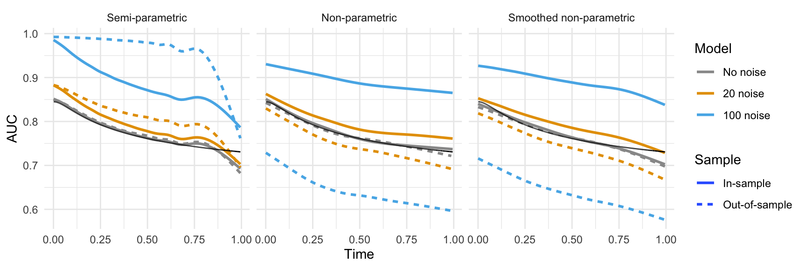
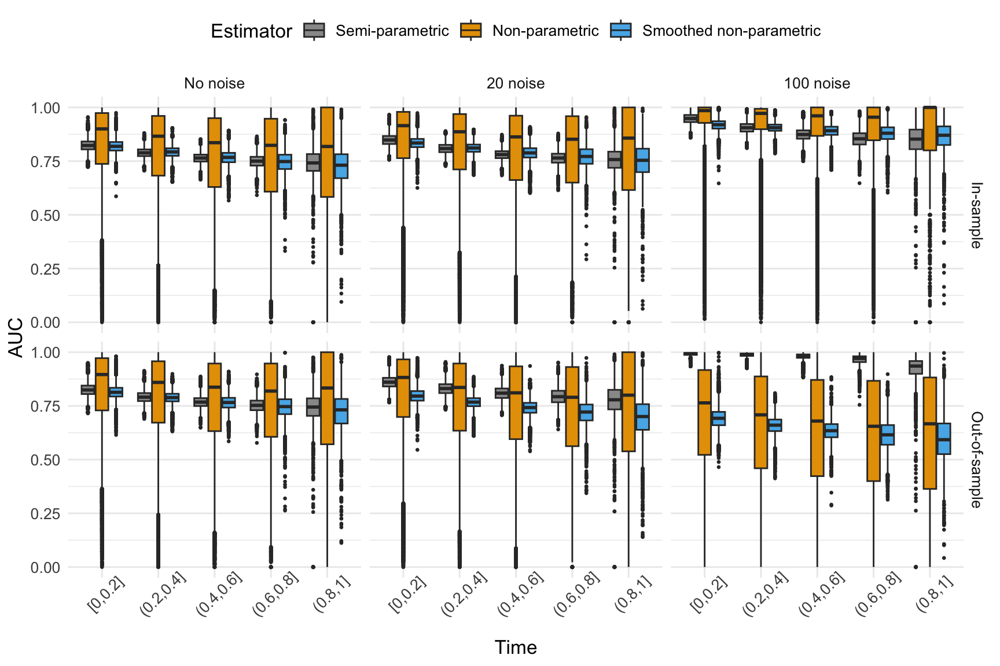
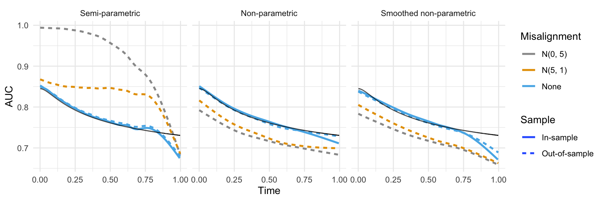
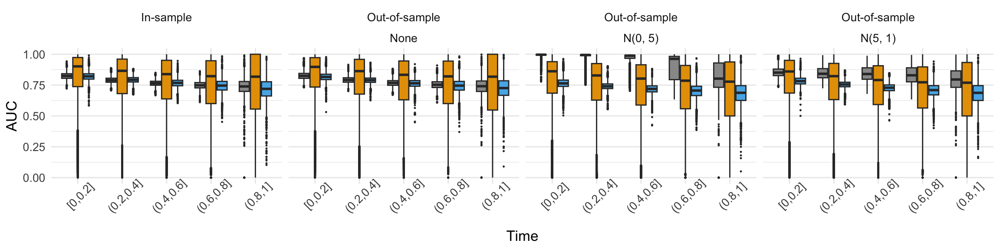
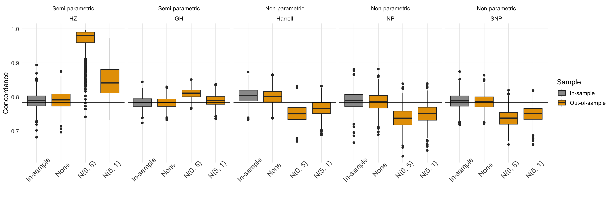
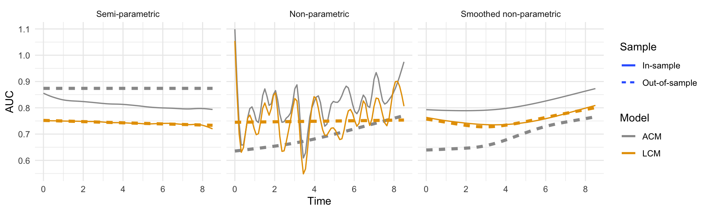

Progress Report
Ying Jin
2024-06-05
1 Simulation
1.1 Training data summary
##
## 0 1
## 293088 206912##
## 0 1
## 0.586176 0.413824## [1] 0.2907121.2 Model overfit
1.2.1 Incident/Dynamic AUC

1.2.2 Spread of Incident/Dynamic AUC
- with the continuous censoring distribution, at some cases the non-parametric values ended up as NA. Also, The semi-parametric when can go over (0, 1) range.
## Warning: Removed 146 rows containing non-finite outside the scale range
## (`stat_boxplot()`).
1.2.3 Concordance

1.3 Covariate misalignment
- Covariate misalignment is introduced by adding misaligned covariate to test datasets (not noise in the model)
- Within each simulation, we investiage two scenarios:
- 10% contaminated subjects, N(5, 1)
- 10% contaminated subjects, N(0, 5)
1.3.1 Incident/Dynamic AUC

1.3.2 Spread of Incident/Dynamic AUC
## Warning: Removed 87 rows containing non-finite outside the scale range
## (`stat_boxplot()`).
1.3.3 Concordance

2 Case Study


## `summarise()` has grouped output by 'estimator'. You can override using the
## `.groups` argument.## # A tibble: 10 × 3
## # Groups: estimator [5]
## estimator model mean_c
## <fct> <fct> <dbl>
## 1 HZ LCM 0.741
## 2 HZ ACM 0.877
## 3 GH LCM 0.710
## 4 GH ACM 0.785
## 5 Harrell LCM 0.745
## 6 Harrell ACM 0.683
## 7 NP LCM 0.768
## 8 NP ACM 0.712
## 9 SNP LCM 0.755
## 10 SNP ACM 0.6993 Summary table
| Estimator | Bias | Variavility | Out-of-sample behavior |
|---|---|---|---|
| Time-dependent AUC | |||
| Semi-parametric | Unbiased | Low | Over-optimistic |
| Non-parametric | Unbiased | High | Appropriate |
| Smoothed non-parametric | Slightly biased | Low | Appropriate |
| Concordance (semi-parametric) | |||
| Heagerty-Zheng | Unbiased | Low | Over-optimistic |
| Gonen-Heller | Unbiased | Low | Over-optimistic |
| Concordance (non-parametric) | |||
| Non-parametric | Unbiased | High | Appropriate |
| Smoothed non-parametric | Unbiased | Low | Appropriate |
| Harrell | Biased upwards | Low | Appropriate |
4 Appendix
- Use one simulated dataset to investigate the weight estimates used in the Heagerty-Zheng estimator of Incident/Dynamic AUC